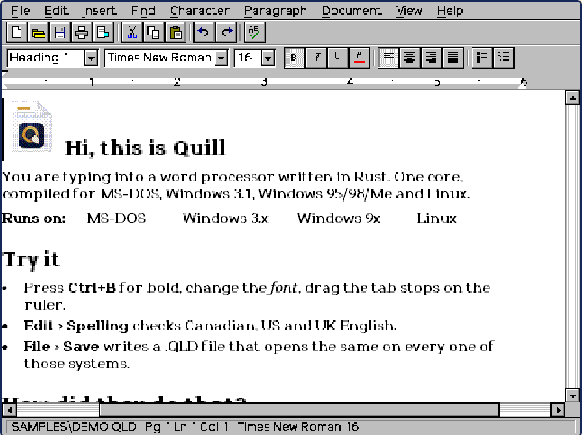

Try Quill
A real DOS program, running in this page. Choose a display, select Start Quill, and FreeDOS boots and opens the sample document in Quill: a short pitch for what Quill is, with its icon inline.
This is QUILLDOS.EXE, the same Rust code as Quill's Windows builds, built for a 1990s PC and started on FreeDOS 1.3 inside js-dos, a DOSBox that runs in the browser. Everything happens on your computer: nothing is uploaded, and the files you save stay on the emulated disk in this page until you restart or close it.
The graphics modes are the real thing: menus, dialogs, a toolbar and formatting bar, a ruler, scroll bars, and the mouse, all in a 640 by 480 picture with proportional fonts. Text mode is the blue DOS screen with its menu bar on the top row. Quill is experimental, and this is a demonstration, not a release.
The player
This browser can't run WebAssembly, which the player needs, so Quill can't start here. A current version of Firefox, Chrome, Edge or Safari will work. The screenshots show what you would have seen.
Not started. The player is about 2 MB, and the disk about 1 MB; they load when you start it.

Mouse and touch
In the graphics modes Quill has a pointer of its own: click the menus, the toolbar and the formatting bar, drag in the page to select, drag the scroll bars and the ruler's markers, and use the dialogs. Text mode takes the mouse too, a cell at a time.
- With a mouse: Quill's pointer stays under yours. Your own pointer is hidden over the screen, and Quill's follows it to the pixel, so slow and diagonal movements stay smooth. This is Follow, the default. Choose Capture under the screen to have the browser lock the mouse to the screen instead (click the screen once; Esc gives your pointer back, and inside a Quill menu or dialog press it again to close that). The Pointer speed slider appears while the mouse is captured.
- On a phone or tablet: the screen works like a laptop's trackpad. Drag a finger to move Quill's pointer, tap to click where the pointer is, tap with two fingers to right-click, and hold a finger still for a moment and then drag to hold the button down (to select text or drag a scroll bar). The row of keys under the screen stands in for the keyboard; turn the phone sideways, or use Full screen, for a bigger picture.
The disk carries FreeDOS's CuteMouse driver, which Quill reads as it would on a real PC: a disk booted in DOSBox has no mouse driver of its own.
Keys
Select the screen first, so the emulated PC has the keyboard. The screen keeps a 4 by 3 shape and scales with the page. Full screen fills the display with it; press Esc or use your browser's way out to come back (inside Quill, Esc closes a menu or dialog, so a second press leaves full screen).
- F10
- Open the menus; the arrow keys and Enter choose.
- Alt + a letter
- Open a menu by its underlined letter, such as Alt + F for File.
- Ctrl + F10
- Open the notes list.
- F7
- Check the spelling, in Canadian English.
- Tab and Esc
- Move between the controls of a dialog, and close a menu or dialog.
- File > Exit
- Leave Quill for the FreeDOS prompt. Type
QUILLDOSto start it again, with/Gfor 256 colours,/G16for 16 or/Tfor text. - Restart
- Boots the emulated PC again in the display chosen above. Saved files are gone.
Your browser may keep a few keys for itself, such as Alt on its own or F11. If an Alt shortcut does nothing, open the menu with F10 instead.
The displays
Captured from this page, in Chromium.
Graphics, 256 colours: the default. js-dos on FreeDOS 1.3 
Text mode. js-dos on FreeDOS 1.3
What is running
- Quill is
QUILLDOS.EXE, built from this project's source for DOS, with the Canadian English dictionary, the sample documents and the fonts for the graphics modes. It carries its own DPMI host, so it needs nothing else. - FreeDOS 1.3 is the operating system: its kernel and command shell, unchanged, on a small floppy disk image. FreeDOS is free software, mostly under the GNU General Public Licence.
- js-dos 8.5.3 is the player: DOSBox compiled to WebAssembly. It is also under the GNU General Public Licence, version 2, and is served from this site, not from js-dos.com.
The licences and sources page names each part, where its source is and how the disk is made. The player makes no network requests of its own beyond the files above.